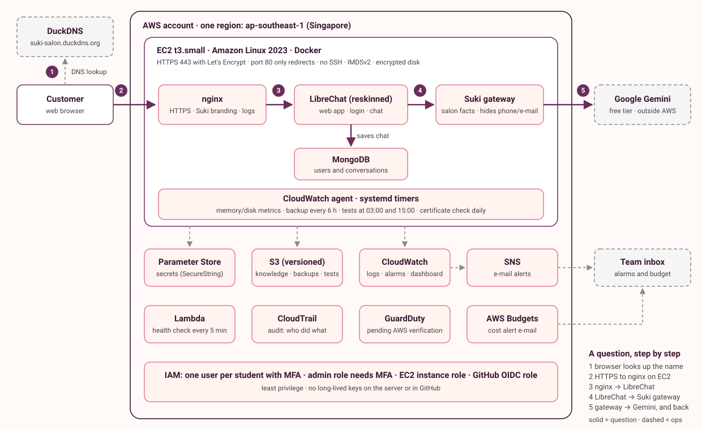
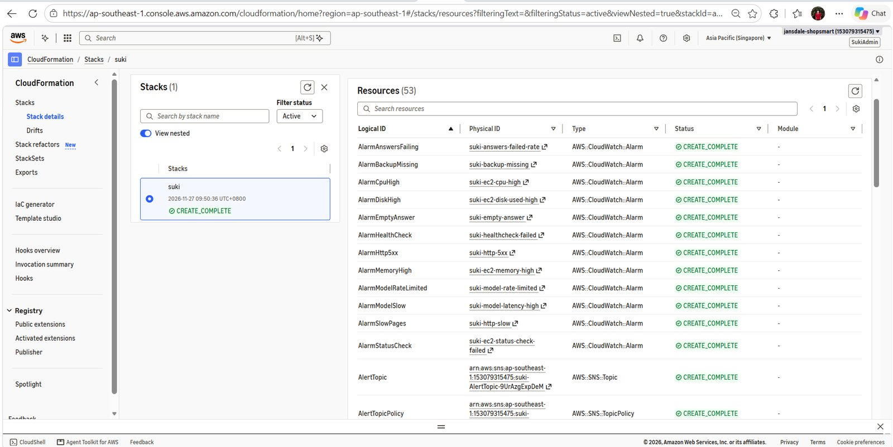
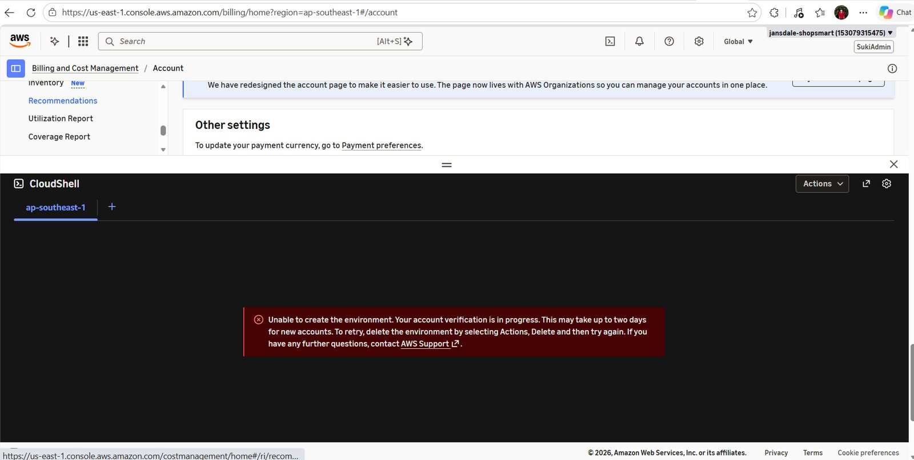
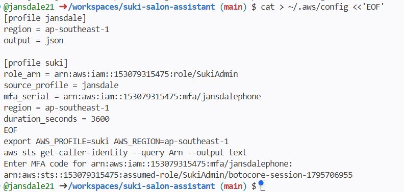
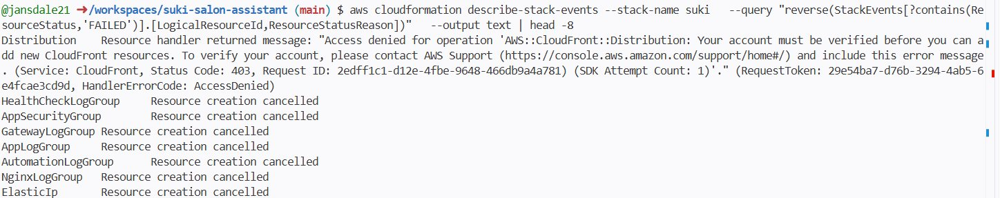
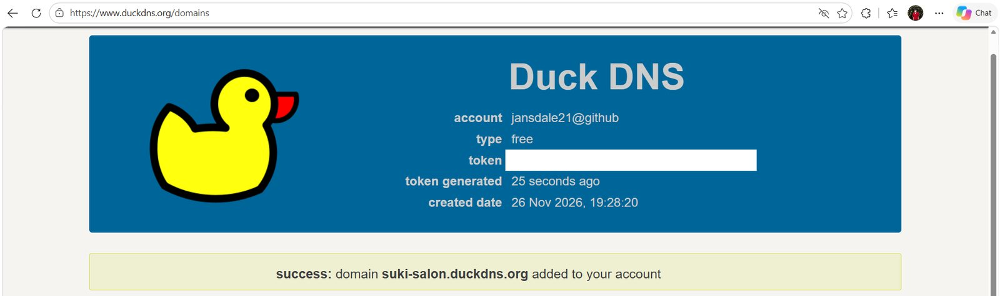
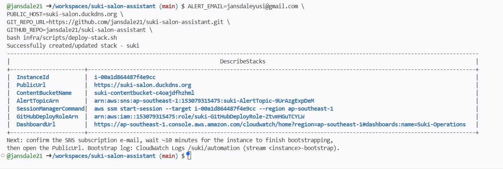
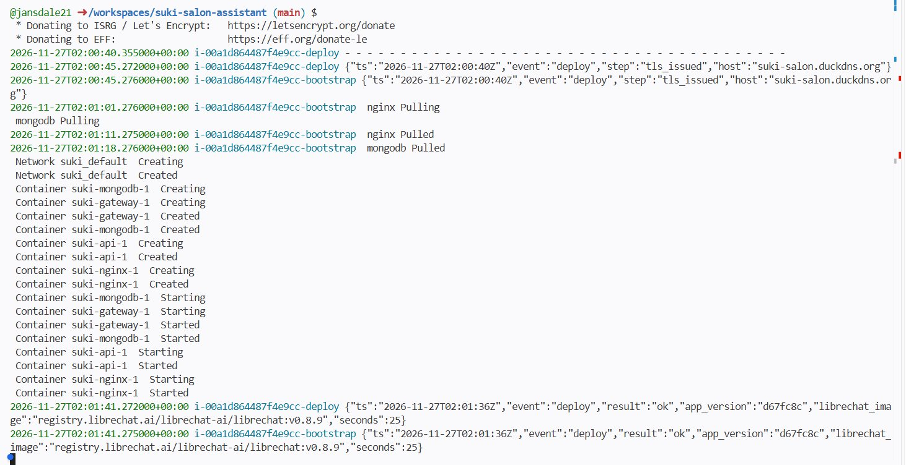

AWS infrastructure design
Where every part of Suki runs, and how one question travels from a customer to the model and back.

docs/assets/architecture.svg (keep it updated when anything changes).How a question travels
- The customer's browser looks up suki-salon.duckdns.org (a free DuckDNS name that points to our Elastic IP; the server updates the record itself on every deploy).
- The question goes over HTTPS straight to our EC2 instance on port 443. nginx holds a free Let's Encrypt certificate, renewed by a daily systemd timer. Port 80 only answers Let's Encrypt checks and redirects everything else to HTTPS; there is no SSH.
- nginx serves Suki's branding, logs the request as JSON (status and time, no IP address), and passes it to LibreChat.
- LibreChat checks the login, saves the message in MongoDB and sends the conversation to the Suki gateway, a small service we wrote.
- The gateway removes phone numbers and e-mail addresses, adds the salon knowledge base (read from S3), and calls Google Gemini with a key read from Parameter Store. Gemini runs outside AWS. The answer streams back the same way, and the gateway writes one log line: question, time taken, success, model, knowledge version and app version.
Services and why we use them
| Service | What it does for Suki | Sizing / notes |
|---|---|---|
| EC2 (t3.small, Amazon Linux 2023) | Runs Docker: nginx, LibreChat, MongoDB, Suki gateway; CloudWatch agent; backup and test timers | 2 vCPU, 2 GiB RAM + 2 GiB swap, 20 GiB gp3 encrypted. Search/RAG containers removed to fit. |
| Elastic IP | Stable public address; the DuckDNS name points here | Billed like any public IPv4 address |
| Let's Encrypt + DuckDNS (external, free) | HTTPS certificate on nginx and the public name suki-salon.duckdns.org | Certificate checked daily by suki-cert-renew.timer; DuckDNS token in Parameter Store |
| S3 (one versioned bucket) | content/ salon knowledge · backups/ database dumps every 6 h (14-day lifecycle) · eval/ test results | Encrypted, public access blocked, HTTPS-only policy |
| SSM Parameter Store | All secrets as SecureString under /suki/prod; also the model name and public URL | Instance role can read only /suki/prod* |
| CloudWatch | Log groups (30–90 day retention), metric filters, 12 alarms, Suki-Operations dashboard | Custom metrics in the Suki and CWAgent namespaces |
| SNS | E-mails every alarm, failed backup and test-run summary to our inbox | |
| Lambda + EventBridge | Health check of the public HTTPS URL every 5 minutes | Python 3.12, 128 MB |
| Systems Manager Session Manager | Shell access without SSH keys or open port 22 | |
| CloudTrail, AWS Budgets (GuardDuty in the template) | Audit trail, cost alerts; threat detection once AWS allows it | Trail logs kept 90 days. GuardDuty could not be enabled: the account was still under AWS verification. |
| IAM | One user per student with MFA; instance role; GitHub OIDC deploy role | No long-lived access keys on the server or in GitHub |
| Google Gemini (external) | The language model | Free tier, key in Parameter Store; model name changeable without redeploying |
Everything is code
The whole environment is one CloudFormation template, infra/cloudformation/suki-stack.yaml. It is deployed with
infra/scripts/deploy-stack.sh, and the server configures itself on first boot from the repository. This means
the system can be rebuilt, not just restored.

Diagram change history
| Date | Change |
|---|---|
| 2026-11-26 | First version, before deployment (CloudFront in front of EC2) |
| 2026-11-27 | CloudFront replaced by HTTPS on nginx (Let's Encrypt) and a DuckDNS name; GuardDuty marked pending |
What changed during deployment, and why
| Problem we hit | What we did |
|---|---|
| CloudShell would not start: "account verification is in progress" | Ran the same scripts from GitHub Codespaces with the AWS CLI, signing in as our IAM user and switching to the SukiAdmin role with an MFA code. |
GuardDuty returned SubscriptionRequiredException | The deploy script now skips GuardDuty when the account cannot use it yet; CloudTrail, MFA and least-privilege IAM still cover access and audit. |
| CloudFormation failed: "Your account must be verified before you can add new CloudFront resources" | Moved HTTPS onto nginx with a free Let's Encrypt certificate and a DuckDNS name. We first tried sslip.io, but it is not on the Public Suffix List, so all its users share one Let's Encrypt limit; duckdns.org is on the list. |
| Gemini returned 503 "high demand" for the newest flash models | Main model changed to gemini-3.5-flash-lite; the gateway now tries fallback models on 429/5xx (set in /suki/prod/GEMINI_FALLBACK_MODELS). |





